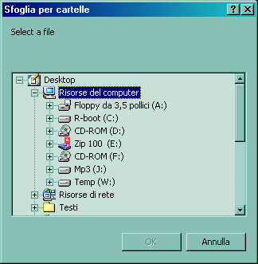
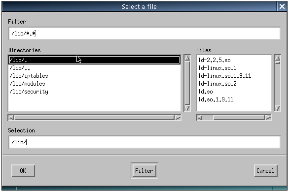
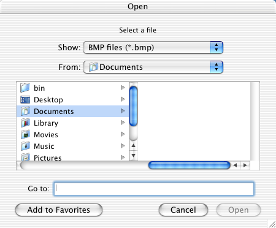
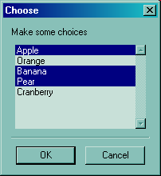
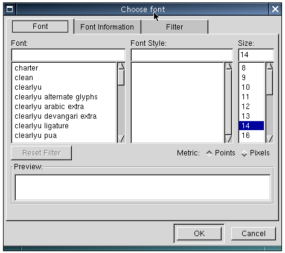
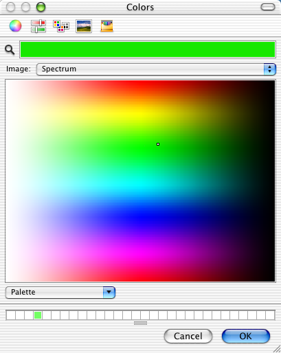

This is the "dialogs" sample from the wxPerl distribution (you can
find it as samples/dialogs/dialogs.pl). It shows many of the common
dialogs available in wxPerl.
Directory selector (Microsoft Windows 2000)

File selector (Linux, Motif)

File selector (Mac OS X)

Multiple choice (Microsoft Windows 2000)

Font selector (Linux, GTK 1.2)

Color selector (Mac OS X)
